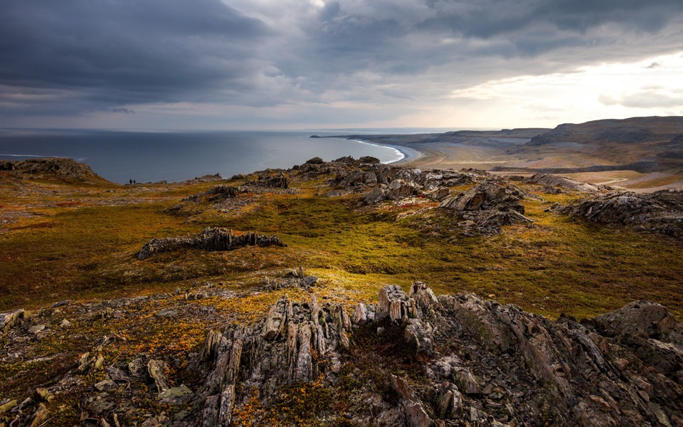
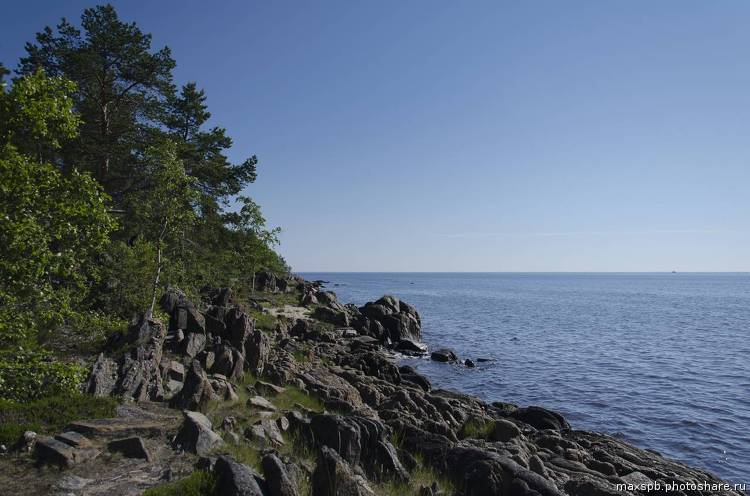
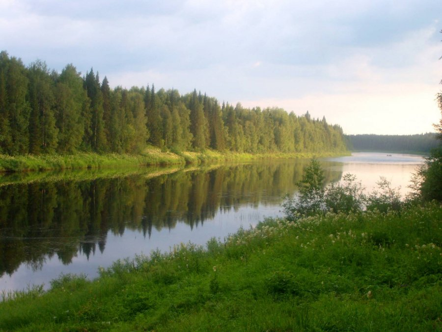
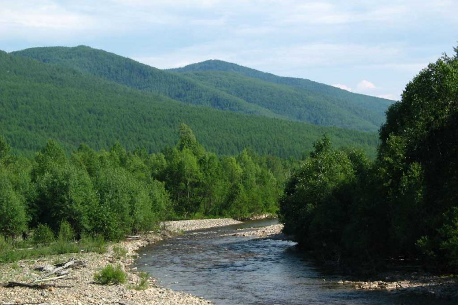
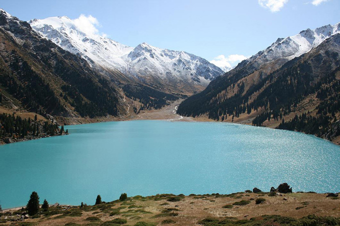
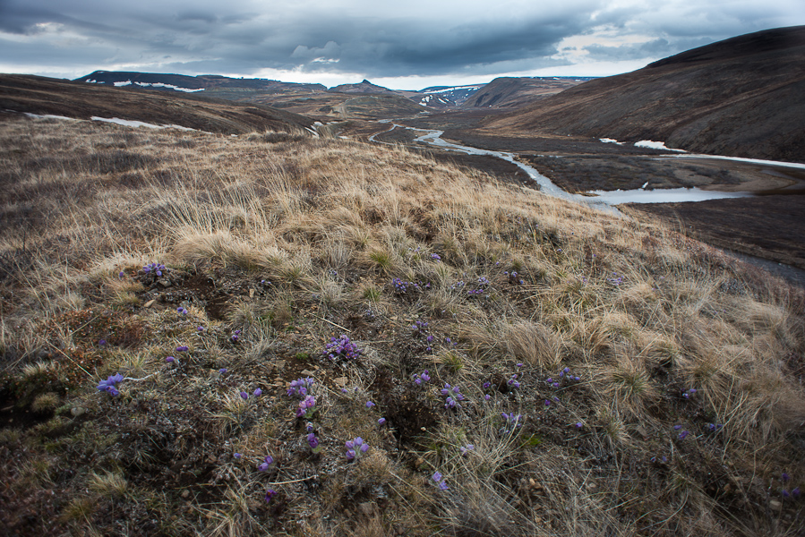
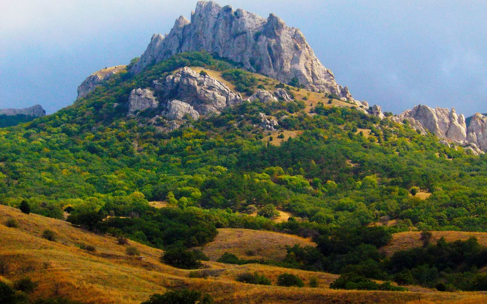
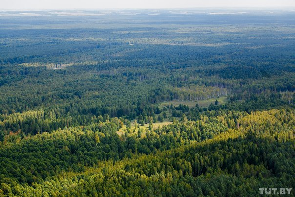

Пешеходный туризм (или треккинг) - наиболее распространенный вид спортивного туризма. Как правило, это пеший поход по пересеченной местности, участниками которого являются неподготовленные специально люди (туристы) - любители активного отдыха. Пешеходный туризм дарит заряд бодрости и массу положительных эмоций, а кроме того, это отличный отдых и возможность укрепить своё физическое здоровье. В дороге время проходит незаметно, на тропе или у привала разные группы туристов постоянно встречаются друг с другом. Это отличная возможность поделиться своими впечатлениями, обрести новых друзей.
Климат полуострова колеблется от субарктического морского (северо-запад полуострова) до умеренно- холодного (центр, юго-запад и восток полуострова). Большая часть этой территории России расположена за Северным полярным кругом и представляет собой террасы, горы (возвышающиеся над уровнем моря более 800 метров), впадины, водоемы (богаты разнообразной рыбой) и равнины из многочисленных озер и болот. Климатические условия полуострова дают возможность летом наслаждаться полярным днем (солнцестояние), а зимой – полярным сиянием.
Этот край называют «пионером» в активном отдыхе и туризме на территории России. Чистейший воздух, смешанные леса с богатой флорой и фауной, реки и озера привлекают туристов со всего мира. Карелия - страна скал, валунов и десятков тысяч озер. Разнообразный, а часто и неповторимый рельеф Карелии отражает геологическую историю региона за последние 3,5 млрд лет. Большая часть территории Карелии - холмистая равнина с ярко выраженными следами деятельности ледника. Волнистая каменная твердь земной поверхности и ныне сохраняет следы древних гор. Карелию часто образно называют "твердокаменной озерно-лесной", подчеркивая ведущие элементы ландшафта, неповторимые сочетания, созданные пространствами причудливых очертаний множества озер и разделяющих их каменисто - сглаженных междуречий, покрытых зеленью тайги.
Архангельская область расположена вдоль побережья арктических морей, и климат здесь варьирует от субарктического до морского и умеренно-континентального. Островная часть территории и некоторые районы побережья отнесены к району Крайнего Севера. Территория представляет собой равнину с холмами на побережье, впадинами и озерами в континентальной части (Летние горы Онежского полуострова), возвышенностями на юге (Коношско-Няндомская возвышенность), низкогорья с вершинами высотой до 450 метров на востоке (Тиман) и плоскогорья (кряж) на западе области (Ветреный Пояс). Область обладает огромным количеством рек и озер. Особо крупными озерами и реками считаются — Лача, Кенозеро, Кожозеро и Северная Двина, Онега, Мезень и Печога. Лесной массив области представлен в виде смешанных лесов. Следует отметить, что здесь расположены такие знаменитые заповедники как Пинежский заповедник, Водлозерский национальный парк и Кенозерский национальный парк. Республика Коми представляет собой сплошной лесной массив, так как леса занимают практически 70% от всей ее территории. Знаменитый заповедник Печоро-Илычский заповедник (территория представлена лесами, которые никогда подвергались техногенному воздействию со стороны человека) и национальный парк «Югыд Ва» охраняется Юнеско и включен в список «Девственных лесов» республики Коми. Климат – умеренно-континентальный, а рельеф равнинный, переходящий местами в горы, омываемый реками.
Расположен в восточной части России, омывается с юго-востока японским морем, отделен от острова Сахалин Татарским и Невельским проливами, включает в свои состав несколько островов. Климатические условия меняются с севера на юг (от континентального до субтропиков) в зависимости от близости к морю и ландшафта. Ландшафт – горные хребты (Сихоте-Алинь, Прибрежный и Джугджур) и плоскогорье высотой до 2500 м. Хабаровский край уникален тем, что является «страной тайги». Светлохвойная тайга охватывает почти весь край от севера до юга, где переходит в елово-пихтовую тайгу. Территория края богата реками, озерами и водопадами (более 100), что говорит о разнообразии флоры и фауны, заповедниками, пещерами и археологическими памятниками. Островная часть Хабаровского края — светлохвойная и темнохвойная тайга. Основными обитателями являются птицы, прилетающие сюда для продолжения потомства.
Рельеф территории Казахстана – высокогорья, низменности, возвышенности и равнины с бессточными бассейнами. Климат в основном резко-континентальный. Горная система представлена хребтами Мангыстауских гор, пустынями в Балхаш-Алакольской впадине, возвышенностью Сарыарки.Большая часть Средней Азии (Киргизия, Таджикистан, Туркмения, Узбекистан) занята полупустынями и пустынями, что говорит о засушливом климате. В горный массив Средней Азии включены: плато Устюрт, Туранская низменность, Тургайское плато, Казахский мелкосопочник, горы: Копетдаг, Памиро-Алай, Тянь-Шань, Джунгарский Алатау, Саур и Тарбагатай.
Магаданская область расположена вдоль побережья Охотского моря на Северо-востоке России. Для области характерен субарктический климат, переходящий в морской. Область представляет собой горы (на Севере их называют Сопками) и плоскогорья, такие как: Верхоянский хребет, Оймяконское и Верхнеколымское нагорья, Янское, Юкагирское и Эльгинское плоскогорья. Лесной массив занимает большую часть территории и состоит из вечнозеленых лесов и реликтовых тополиевых лесов. Чукотка – самый суровый и загадочный край на всей территории России. Большая часть территории расположена за Северным полярным кругом. Чукотка расположена на всем Чукотском полуострове и прилегающих островах. Субарктический климат, сменяется морским, на побережье и континентальным, во внутренних районах. Вечная мерзлота охватывает всю Чукотку. Большая часть полуострова – горная и арктическая тундра с кустарниками, лишайниками, травами и мхами. Изредка встречаются светлохвойные и реликтово — тополевые леса. Полуостров состоит из нескольких природных зон (арктическая пустыня, типичная и южная тундра, лесотундра и лиственная тайга) что объясняет большое многообразие растительного и животного мира.
Рельеф Крыма начинается от равнин на Востоке, до возвышенности и горных массивов на Юго-западе республики. Природа богата смешанными лесами, сосновыми лесами, степями и лесостепями. На большей территории страны умеренно-континентальный климат, переходящий в средиземноморский на южном берегу Крыма (Крымский полуостров). . Горный Крым интересен историческими и археологическими памятниками культуры (города и монастыри в пещерах, средневековые крепости), дворцами, водопадами, солеными озерами (около 50) и пейзажами. Отличительной особенностью Крыма является плавный переход от гор до равнинных степей, смена прохладного воздуха на морской бриз.
Республика находиться в Восточной Европе, что говорит об умеренно-континентальном климате с мягкой зимой и теплым летом. Рельеф равнинный переходящий в некоторых районах в возвышенности. Природа Белоруссии богата озерами, реками и лесами, что привлекает туристов со всего мира. Маршруты проходят по заповедникам и национальным паркам с минимальным воздействием на окружающую природу. Путь туриста проходит по специально оборудованным тропам. Примером служат такие парки как «Нарочанский», «Браславские озера» и Полесский заповедник.